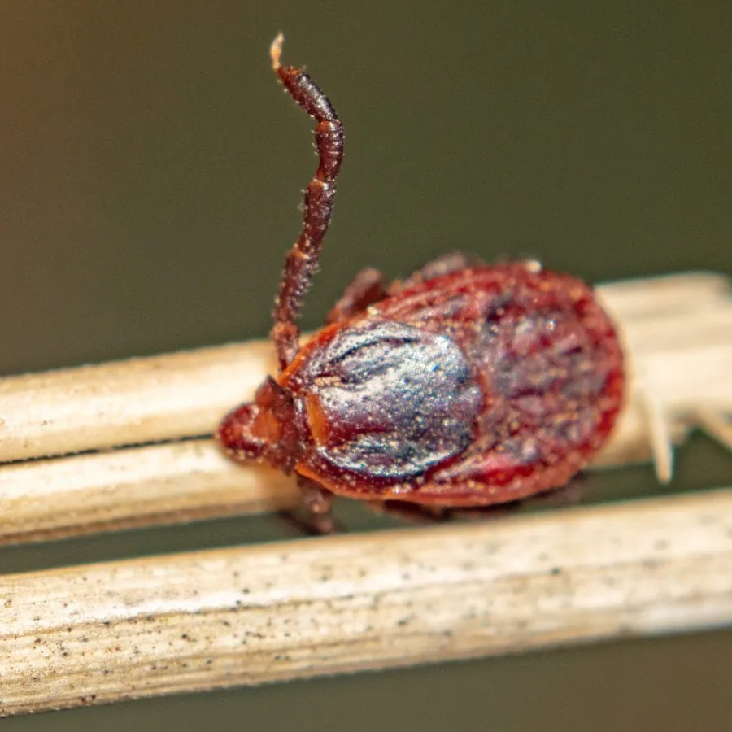

蛛形动物 · 动物界
血红扇头蜱 Rhipicephalus sanguineus

全球分布的硬蜱，寄主以犬为主，体色红褐、盾板无明显花纹，常藏在犬舍缝隙与墙角，可传播犬巴贝虫等多种病原。
- 分类
- 门节肢动物门纲蛛形纲目蜱目科硬蜱科属扇头蜱属
- 栖息环境
- 犬舍、墙角、砖缝、地板下、草丛与城市绿地
- 地理分布
- 全球分布，随家犬扩散至各大洲的温带与热带地区
- 保护级别
- IUCN 未评估；为重要医学与兽医媒介，需重点防制
物种志
血红扇头蜱成虫体长约 3–5 毫米，未吸血时呈红褐至暗褐色，饱血后可膨大到 10 毫米以上、呈灰蓝色。雄蜱的盾板覆盖整个背部，雌蜱的盾板仅覆盖前部，盾板上没有明显的银白花纹，这是与许多其他硬蜱区分的特点。口器较短，从背面可见；体表有细密的刻点与短毛。
它是全球分布最广的蜱类之一，随犬的流动扩散到各大洲，栖息于犬舍、墙角、砖缝、地板下与草丛中，寄主以家犬为主，也叮咬人和其他哺乳动物。生活史包括卵、幼虫、若虫与成虫四个阶段，各阶段均需吸血，完成一代约需数月，在温暖环境中可全年活动。它是犬巴贝虫病、犬埃立克体病与地中海斑点热等病原的传播媒介，被叮咬后需及时拔除并消毒。防制以清理犬舍缝隙、定期给犬只驱虫为主。
形态与习性
- 体长未吸血约 3–5 mm，饱血后可超过 10 mm
- 寄主以家犬为主，也叮咬人和其他哺乳动物
- 生活史卵、幼虫、若虫、成虫四阶段，各阶段均需吸血
- 医学意义传播犬巴贝虫病、犬埃立克体病与地中海斑点热
- 栖息场所犬舍缝隙、墙角、砖缝与地板下，常在室内完成生活史
- 活动季节温暖环境中可全年活动，夏季最活跃
- 寿命成虫在适宜条件下可存活数月
趣味知识
- 血红扇头蜱能在室内完成整个生活史，犬舍墙缝里常藏着成群的蜱。
- 它偏爱狗，但在狗不在时会转而叮咬人。
- 拔蜱时要连口器一起取出，硬拽会让口器断在皮肤里引起感染。